HW 6
1. Overview
The point of HW 6 is setting up MKDocs and Github Action+Pages automation for our existing project. Also, from previous stages we inherit:
- Cookiecutter for the overall template
- Poetry for dependencies, convenient setup with pyproject
- Pre-commit hooks and linting (Black, isort, Ruff, MyPy, Bandit)
wine_predictoras a package- Jupyter notebook solution using that package
- Docker reproducibility
- Git usage: starting out with pushing changes to
developbranch, testing docker onfeature/docker, finally pushing tomain - DVC-based data and model versioning
- MLFlow experiment tracking and logging
- A multi stage (train->evaluate->notify) ML pipeline
- Structured composable configuration with OmegaConf
- ClearML tracking, model registry, pipeline
In this HW we add: - MKDocs - Github Actions+Pages integration
A few notes on the specifics:
- We use Wine Quality prediction as an example
- The actual ML pipeline is just a baseline solution, for now we don't really care about metrics
- Running the Docker container means running the training and printing the metrics by default
- A few folders from the template (e.g.
data/processed) were kept even though they are not currently used in case we need them in the future - We don't actually make and plots or figures, but keep those folders for the reason mentioned above
- Detailed tool configs can be found in the corresponding files (mainly
pyproject.toml) - Why DVC? Seemed versatile and simple enough. I like the parallels between DVC and Git.
- Why MLFlow? I've already used W&B and TensorBoard. MLFlow was something I've been wanting to try for a while.
- Aside from MLFlow functionality, we track DVC pipeline progress entirely in console. We also apply the same logic to completion notifications, using
wine_predictor/pipelines/notify.pyas an example. Its logic could be replaced with a call to the Telegram API for a proper message-based notification system.
2. Project structure
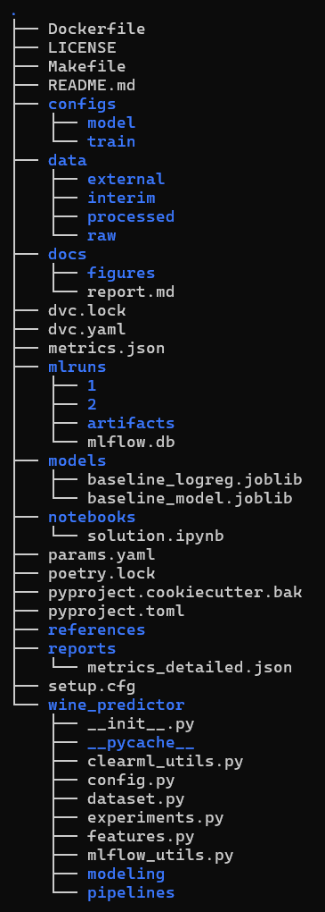
3. Dependency management
3.1 Poetry
Poetry is used as the dependency manager
This is a barebones example of using poetry to install our dependencies:
pip install --user poetry
poetry config virtualenvs.in-project true
poetry install
This creates .venv/ inside the project and installs everything from pyproject.toml / poetry.lock.
3.2 pyproject.toml
It contains: * Project metadata * Python dependencies * Dev dependencies (linters, pre-commit hooks, jupyter) * Tool configuration
Installing from scratch:
git clone https://github.com/RageAgainstTheAssembly/EPML-ITMO
cd EPML_ITMO
poetry install
4. Formatters, linters, pre-commit hooks
- Black – code formatter
- isort – import sorter
- Ruff – fast linter + auto-fixes
- MyPy – static type checker
- Bandit – security scanner
Installing and running hooks:
poetry run pre-commit install
poetry run pre-commit run --all-files

5. Actual ML solution
5.1 Implementation
Won't be going into detail - it's essentially a basic SKLearn pipeline with a Logistic Regression classifier. Training a great ML model is not the point of this homework
5.3 Running from a notebook
Solution in notebooks/solution.ipynb uses the package code to run training and inference.
6. Jupyter setup
We use Jupyter to showcase usage and register a dedicated kernel:
poetry add --group dev jupyterlab ipykernel
poetry run python -m ipykernel install --user --name epml-wine --display-name "Python (epml_itmo)"
poetry run jupyter lab
7. Docker
We provide a simple Dockerfile in the project root
To build and run:
docker build -t epml-wine:dev .
docker run --rm epml-wine:dev
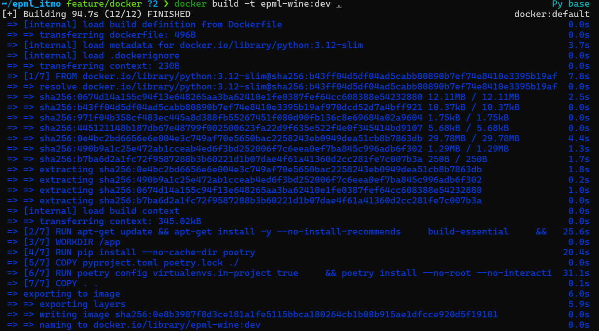

8. Versioning tools
DVC was chosen because it's very versatile and also more distinct than Git LFS, which I already have some experience with. We use DVC for both data and model versioning, while also tracking hyperparams and metrics.
9. Data versioning
We use a local remote to keep track of our only dataset - WineQT.csv
10. MLFlow setup and integration
We use MLFlow to track experiments for reasons outlined above.
10.1 Setup
MLFlow is added as a project dependency via Poetry:
poetry add mlflow
wine_predictor/mlflow_utils.py
10.2 Database and artifacts
MLFlow is configured to run on top of a local SQLite DB and a local artifact directory: Tracking DB URI: sqlite:///mlruns/mlflow.db Artifact location: mlruns/artifacts
configure_mlflow handles basic configuration:
# wine_predictor/mlflow_utils.py
DEFAULT_EXPERIMENT_NAME = "wine_quality_hw3"
DEFAULT_TRACKING_URI = "sqlite:///mlruns/mlflow.db"
def configure_mlflow(
tracking_uri: str = DEFAULT_TRACKING_URI,
experiment_name: str = DEFAULT_EXPERIMENT_NAME,
) -> None:
mlflow.set_tracking_uri(tracking_uri)
mlflow.set_experiment(experiment_name)
10.3 Authentication
Since we're running a local-only MLFlow setup and UI is bound to localhost, we don't really have any traditional authentication:
poetry run mlflow ui \
--backend-store-uri sqlite:///mlruns/mlflow.db \
--default-artifact-root mlruns/artifacts \
--host 127.0.0.1 \
--port 5000
chmod -R go-rwx mlruns
10.4 Code integration
We use:
-
@training_run(...)– decorator that wraps a training function into an MLflow run -
mlflow_run(...)– context manager for the decorator
@training_run:
-
Configures MLFlow (URI + experiment name)
-
Starts and stops runs
-
Logs params, metrics, artifacts, model and tags
The decorator is defined in wine_predictor/mlflow_utils.py and is used in wine_predictor/modeling/train.py. The updated training code uses the new decorators and builds a trainining pipeline with the provided params.
10.5 Launching a single run
To launch a single run with params.yaml:
poetry run python -m wine_predictor.modeling.train
10.6 Launching a grid of experiments
To launch an entire grid of training runs:
poetry run python -m wine_predictor.experiments
wine_predictor/experiments.py
11. MLFlow usage
To run the UI:
poetry run mlflow ui \
--backend-store-uri sqlite:///mlruns/mlflow.db \
--default-artifact-root mlruns/artifacts \
--host 127.0.0.1 \
--port 5000
 Built-in functionality allows you to search and filter by metrics, values, time created, state. You can also sort and open additional columns with all of your tracked params. For example, you could:
Filter runs by tags:
Built-in functionality allows you to search and filter by metrics, values, time created, state. You can also sort and open additional columns with all of your tracked params. For example, you could:
Filter runs by tags:
tags.hw = "3"tags.experiment = "grid"tags.algorithm = "random_forest"
Sort by:
metrics.accuracy DESC
Select several runs and click Compare to see:
- parallel coordinate plots
- metric vs parameter plots (e.g. accuracy vs C)
- individual run details (artifacts, params, tags)
MLFlow also makes it easy to visualise key metrics: 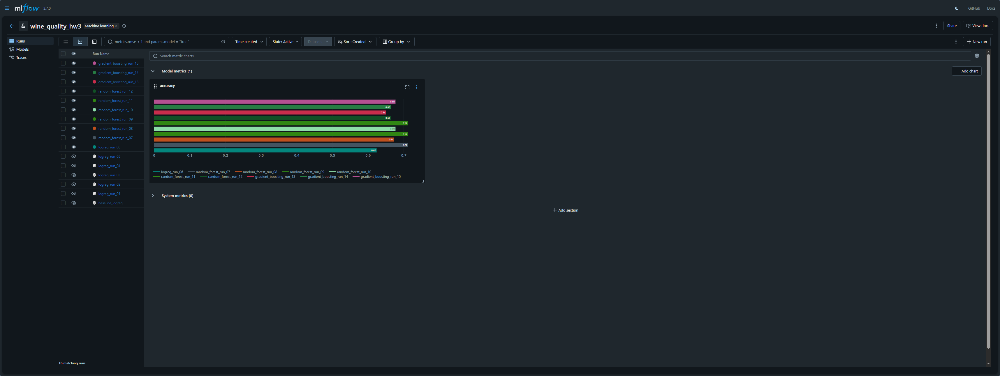 Clicking on a specific run will allow you to see its details and params, as well as information on run artifacts: 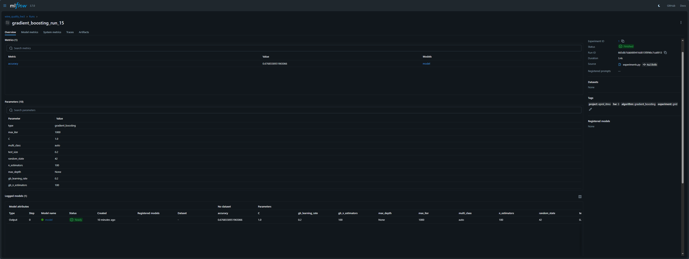
12. DVC ML pipeline and OmegaConf configuration
12.1 Why DVC?
- Fairly lightweight and simple
- Already integrated for data versioning in previous stages of this project
- Supports all the essential features like stages, dependency tracking, caching, parallel execution
12.2 DVC pipeline setup
In practice, we implement the pipeline by changing dvc.yaml from a single train stage to train->evaluate->notify:
stages:
train:
cmd: poetry run python -m wine_predictor.modeling.train --model logreg
deps:
- data/external/WineQT.csv
- wine_predictor/dataset.py
- wine_predictor/features.py
- wine_predictor/modeling/train.py
- wine_predictor/config.py
- configs/train/base.yaml
- configs/model/logreg.yaml
outs:
- models/baseline_model.joblib
metrics:
- metrics.json:
cache: false
evaluate:
cmd: poetry run python -m wine_predictor.pipelines.evaluate
deps:
- models/baseline_model.joblib
- wine_predictor/pipelines/evaluate.py
- wine_predictor/dataset.py
- wine_predictor/features.py
- wine_predictor/config.py
metrics:
- reports/metrics_detailed.json:
cache: false
notify:
cmd: poetry run python -m wine_predictor.pipelines.notify
deps:
- reports/metrics_detailed.json
- wine_predictor/pipelines/notify.py
always_changed: true
always_changed: true for notify stage to make sure it actually runs every time, even when we're reproducing existing results.
This configuration results in a fairly simple DAG: 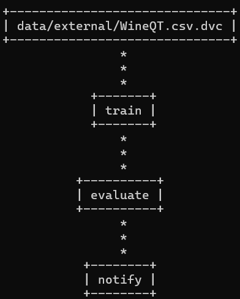
12.3 DVC pipeline usage
In order to run the pipeline with all its stages, run
poetry run dvc repro
train, evaluate and notify sequentially. Initiating another run without changes will lead to the following behaviour:
 Caching will ensure unchanged stages (
Caching will ensure unchanged stages (train, evaluate) do not run again. Instead, only the pipeline completion notification stage notify will run to show results.
DVC also supports running multiple jobs in parallel
poetry run dvc repro -j 2
The console output of the various stages is used in conjunction with the notify stage to keep track of execution, errors and results.
12.4 Why OmegaConf?
- Easy to use with YAML files
- Supports the necessary features
- Pretty lightweight and easy to add to our existing code
12.5 OmegaConf usage
- Loading base training configuration from
configs/train/base.yaml - Loading algorithm-specific configurations from
configs/model/*.yaml - Providing these configs to the training code in a composable way
Configs are stored in a dedicated configs/ directory:
configs/
├── train
│ └── base.yaml
└── model
├── logreg.yaml
├── random_forest.yaml
└── gradient_boosting.yaml
wine_predictor/config.py integrates OmegaConf and performs extra validation.
We also add some validation on top to make sure configs are checked for broken values.
Overall, we're using the following hierarchy: base -> model-type -> per-run overrides.
13. ClearML Server setup
13.1 Local server via docker-compose
We use the docker-compose.yml recommended by ClearML docs.
This makes it easy to launch the server with
docker-compose up
docker-compose.yml is included below:
version: "3.6"
services:
apiserver:
command:
- apiserver
container_name: clearml-apiserver
image: clearml/server:latest
restart: unless-stopped
volumes:
- /opt/clearml/logs:/var/log/clearml
- /opt/clearml/config:/opt/clearml/config
- /opt/clearml/data/fileserver:/mnt/fileserver
depends_on:
- redis
- mongo
- elasticsearch
- fileserver
environment:
CLEARML_ELASTIC_SERVICE_HOST: elasticsearch
CLEARML_ELASTIC_SERVICE_PORT: 9200
CLEARML_MONGODB_SERVICE_HOST: mongo
CLEARML_MONGODB_SERVICE_PORT: 27017
CLEARML_REDIS_SERVICE_HOST: redis
CLEARML_REDIS_SERVICE_PORT: 6379
CLEARML_SERVER_DEPLOYMENT_TYPE: linux
CLEARML__apiserver__pre_populate__enabled: "true"
CLEARML__apiserver__pre_populate__zip_files: "/opt/clearml/db-pre-populate"
CLEARML__apiserver__pre_populate__artifacts_path: "/mnt/fileserver"
CLEARML__services__async_urls_delete__enabled: "true"
CLEARML__services__async_urls_delete__fileserver__url_prefixes: "[${CLEARML_FILES_HOST:-}]"
CLEARML__secure__credentials__services_agent__user_key: ${CLEARML_AGENT_ACCESS_KEY:-}
CLEARML__secure__credentials__services_agent__user_secret: ${CLEARML_AGENT_SECRET_KEY:-}
ports:
- "8008:8008"
networks:
- backend
- frontend
elasticsearch:
networks:
- backend
container_name: clearml-elastic
environment:
bootstrap.memory_lock: "true"
cluster.name: clearml
cluster.routing.allocation.node_initial_primaries_recoveries: "500"
cluster.routing.allocation.disk.watermark.low: 500mb
cluster.routing.allocation.disk.watermark.high: 500mb
cluster.routing.allocation.disk.watermark.flood_stage: 500mb
discovery.type: "single-node"
http.compression_level: "7"
node.name: clearml
reindex.remote.whitelist: "'*.*'"
xpack.security.enabled: "false"
ulimits:
memlock:
soft: -1
hard: -1
nofile:
soft: 65536
hard: 65536
image: elasticsearch:8.17.0
restart: unless-stopped
volumes:
- /opt/clearml/data/elastic_7:/usr/share/elasticsearch/data
- /usr/share/elasticsearch/logs
fileserver:
networks:
- backend
- frontend
command:
- fileserver
container_name: clearml-fileserver
image: clearml/server:latest
environment:
CLEARML__fileserver__delete__allow_batch: "true"
restart: unless-stopped
volumes:
- /opt/clearml/logs:/var/log/clearml
- /opt/clearml/data/fileserver:/mnt/fileserver
- /opt/clearml/config:/opt/clearml/config
ports:
- "8081:8081"
mongo:
networks:
- backend
container_name: clearml-mongo
image: mongo:7.0.22
restart: unless-stopped
command: --setParameter internalQueryMaxBlockingSortMemoryUsageBytes=196100200
volumes:
- /opt/clearml/data/mongo_4/db:/data/db
- /opt/clearml/data/mongo_4/configdb:/data/configdb
redis:
networks:
- backend
container_name: clearml-redis
image: redis:7.4.1
restart: unless-stopped
volumes:
- /opt/clearml/data/redis:/data
webserver:
command:
- webserver
container_name: clearml-webserver
# environment:
# CLEARML_SERVER_SUB_PATH : clearml-web # Allow Clearml to be served with a URL path prefix.
image: clearml/server:latest
restart: unless-stopped
depends_on:
- apiserver
ports:
- "8080:80"
networks:
- backend
- frontend
async_delete:
depends_on:
- apiserver
- redis
- mongo
- elasticsearch
- fileserver
container_name: async_delete
image: clearml/server:latest
networks:
- backend
restart: unless-stopped
environment:
CLEARML_ELASTIC_SERVICE_HOST: elasticsearch
CLEARML_ELASTIC_SERVICE_PORT: 9200
CLEARML_MONGODB_SERVICE_HOST: mongo
CLEARML_MONGODB_SERVICE_PORT: 27017
CLEARML_REDIS_SERVICE_HOST: redis
CLEARML_REDIS_SERVICE_PORT: 6379
PYTHONPATH: /opt/clearml/apiserver
CLEARML__services__async_urls_delete__fileserver__url_prefixes: "[${CLEARML_FILES_HOST:-}]"
entrypoint:
- python3
- -m
- jobs.async_urls_delete
- --fileserver-host
- http://fileserver:8081
volumes:
- /opt/clearml/logs:/var/log/clearml
- /opt/clearml/config:/opt/clearml/config
agent-services:
networks:
- backend
container_name: clearml-agent-services
image: clearml/clearml-agent-services:latest
deploy:
restart_policy:
condition: on-failure
privileged: true
environment:
CLEARML_HOST_IP: ${CLEARML_HOST_IP}
CLEARML_WEB_HOST: ${CLEARML_WEB_HOST:-}
CLEARML_API_HOST: http://apiserver:8008
CLEARML_FILES_HOST: ${CLEARML_FILES_HOST:-}
CLEARML_API_ACCESS_KEY: ${CLEARML_AGENT_ACCESS_KEY:-$CLEARML_API_ACCESS_KEY}
CLEARML_API_SECRET_KEY: ${CLEARML_AGENT_SECRET_KEY:-$CLEARML_API_SECRET_KEY}
CLEARML_AGENT_GIT_USER: ${CLEARML_AGENT_GIT_USER}
CLEARML_AGENT_GIT_PASS: ${CLEARML_AGENT_GIT_PASS}
CLEARML_AGENT_UPDATE_VERSION: ${CLEARML_AGENT_UPDATE_VERSION:->=0.17.0}
CLEARML_AGENT_DEFAULT_BASE_DOCKER: "ubuntu:18.04"
AWS_ACCESS_KEY_ID: ${AWS_ACCESS_KEY_ID:-}
AWS_SECRET_ACCESS_KEY: ${AWS_SECRET_ACCESS_KEY:-}
AWS_DEFAULT_REGION: ${AWS_DEFAULT_REGION:-}
AZURE_STORAGE_ACCOUNT: ${AZURE_STORAGE_ACCOUNT:-}
AZURE_STORAGE_KEY: ${AZURE_STORAGE_KEY:-}
GOOGLE_APPLICATION_CREDENTIALS: ${GOOGLE_APPLICATION_CREDENTIALS:-}
CLEARML_WORKER_ID: "clearml-services"
CLEARML_AGENT_DOCKER_HOST_MOUNT: "/opt/clearml/agent:/root/.clearml"
SHUTDOWN_IF_NO_ACCESS_KEY: 1
volumes:
- /var/run/docker.sock:/var/run/docker.sock
- /opt/clearml/agent:/root/.clearml
depends_on:
- apiserver
entrypoint: >
bash -c "curl --retry 10 --retry-delay 10 --retry-connrefused 'http://apiserver:8008/debug.ping' && /usr/agent/entrypoint.sh"
networks:
backend:
driver: bridge
frontend:
driver: bridge
13.2 ClearML components
Docker launches the standard services needed for ClearML: - clearml-webserver - clearml-apiserver - clearml-fileserver - async_delete - MongoDB - Elasticsearch - Redis
13.3 Authentication
We create a user in the ClearML UI, generate an API key. Then, inside the project directory we can run
poetry add clearml
poetry run clearml-init

14. ClearML integration
14.1 Code integration
ClearML integration is implemented in wine_predictor/clearml_utils.py, including helper functions and a decorator. This is done mostly to ensure actual pipeline code stays simple and readable.
14.2 ClearML tracking
We log parameters to ClearML:
 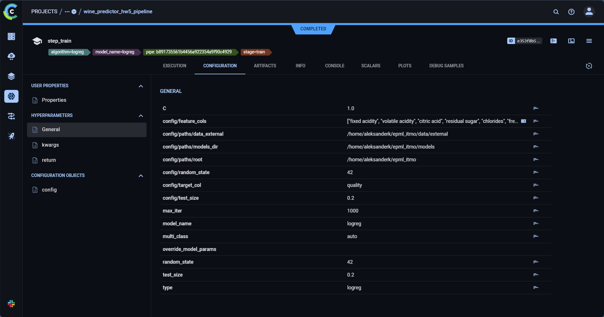
We also track and plot training metrics (in this case, accuracy):
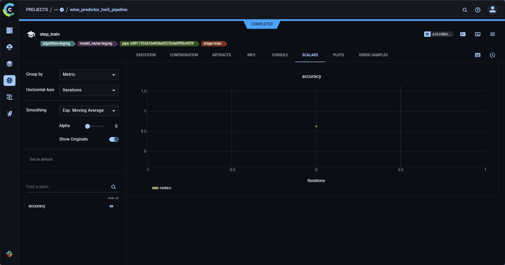
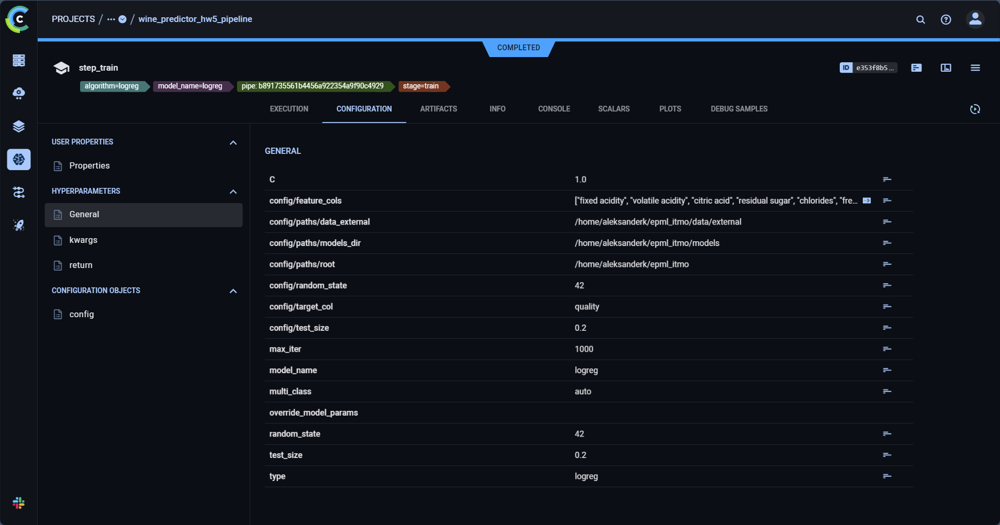
We also track and plot training metrics (in this case, accuracy):
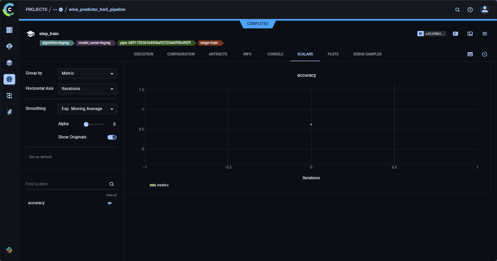
14.4 ClearML model registry
We track our models with ClearML model registry functionality, enabling model versioning and metadata tracking: 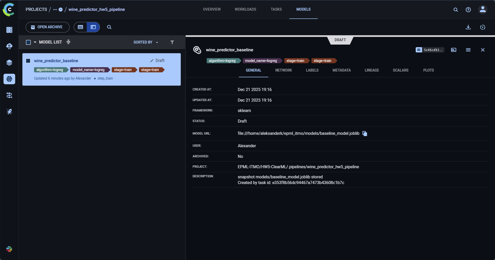
14.3 Comparing experiments
We can easily visualise and compare metrics across experiments in the UI: 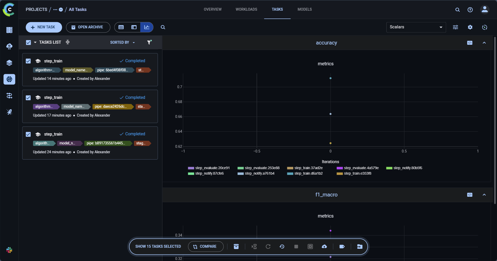 The same goes for comparing models in the registry: 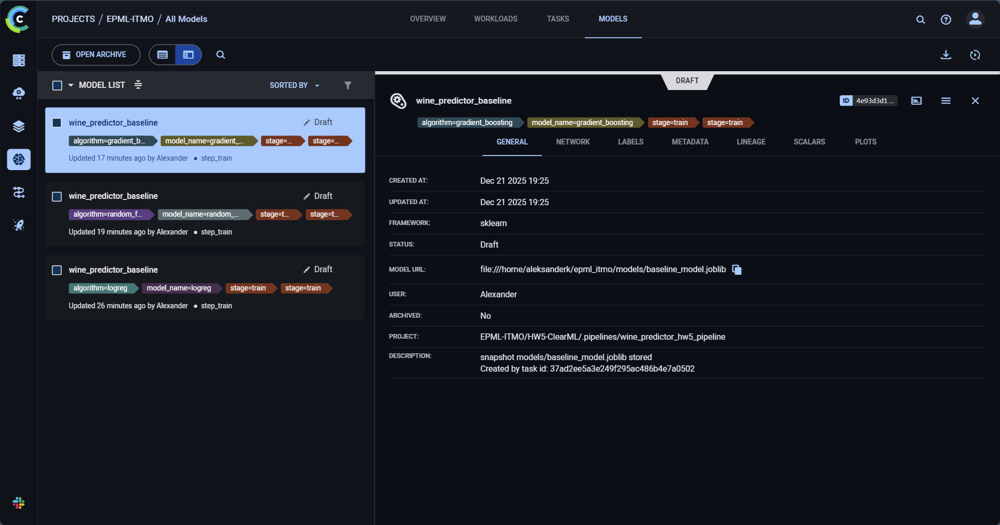
15.1 ClearML pipeline
ClearML pipeline is implemented in wine_predictor/pipelines/clearml_pipeline.py. It contains 3 steps, mirroring our previous DVC pipeline:
- step_train
- step_evaluate
- step_notify
We run it locally with
pipe.start_locally(run_pipeline_steps_locally=True)
ClearML UI shows all 3 stages, their status and timings, as well as artifacts.
16. MKDocs setup
We use MkDocsto build a documentation website from Markdown files inside docs/.
Key files:
mkdocs.yml - main documentation configuration (navigation, theme, plugins)docs/index.md- documentation homepagedocs/deployment.md- deployment guidedocs/usage.md- usage examplesdocs/reproducibility.md- step-by-step reproduction guidedocs/experiments/index.md- experiments section landing pagedocs/api/index.md- API reference landing page
Local usage:
poetry run mkdocs build
poetry run mkdocs serve

17. API reference geneartion
API reference is generated automatically when building documentation:
- mkdocstrings renders API docs from Python modules
- mkdocs-gen-files generates Markdown pages for each module
Reference pages are generated by scripts/gen_ref_pages.py

18. Experiment report
docs/experiments/experiments.md contains a report with table and plot comparisons of existing MLFlow experiments. Note that MLFlow data is not accessible to Github Actions, so Github Pages will show a minimal report.
To run locally:
poetry run generate-experiment-report

In order to make it automated and reproducible, we've added a doc_report stage to DVC, so you can just run
poetry run dvc repro
19. Github Pages publication via Github Actions
Documentation is deployed automatically via a workflow file .github/workflows/docs.yml. It follows these steps:
- Install poetry
- Install dependencies
- Generate experiment report
- Build docs
- Deploy to Github Pages
20. Reproducing everything
# 1. Clone
git clone https://github.com/RageAgainstTheAssembly/EPML-ITMO
cd EPML-ITMO
git checkout main_hw3
# 2. Poetry
pip install --user poetry
poetry config virtualenvs.in-project true
# 3. Dependencies
poetry install --with docs
# 4. Install pre-commit hooks and run them
poetry run pre-commit install
poetry run pre-commit run --all-files
# 5. Get data and model artifacts from DVC remote (this assumes you have access to the remote)
poetry run dvc remote modify local_remote url <insert your remote path>
poetry run dvc pull
# 6. Reproduce experiments
poetry run dvc repro
# 7. See docs
poetry run mkdocs serve